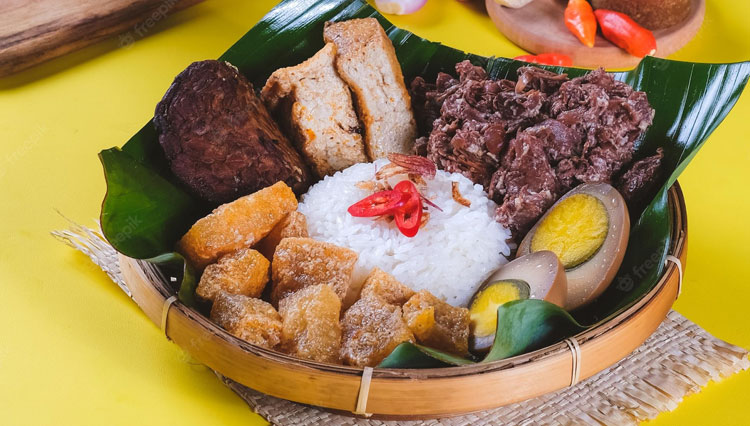

Resep Gudeg
Gudeg adalah makanan khas Yogyakarta yang terbuat dari nangka muda yang dimasak dengan santan dan rempah-rempah. Rasanya manis dan gurih, cocok disajikan dengan nasi.
Bahan-bahan:
- 1 kg nangka muda, potong-potong
- 500 ml santan
- 4 siung bawang merah
- 3 siung bawang putih
- 3 lembar daun salam
- 1 batang serai, memarkan
- 1 sdt gula merah
- Garam secukupnya
Cara Membuat:
- Tumis bawang merah dan bawang putih hingga harum.
- Masukkan nangka muda, daun salam, dan serai, aduk rata.
- Tambahkan santan, gula merah, dan garam. Masak dengan api kecil hingga nangka empuk dan bumbu meresap.
- Angkat dan sajikan dengan nasi.